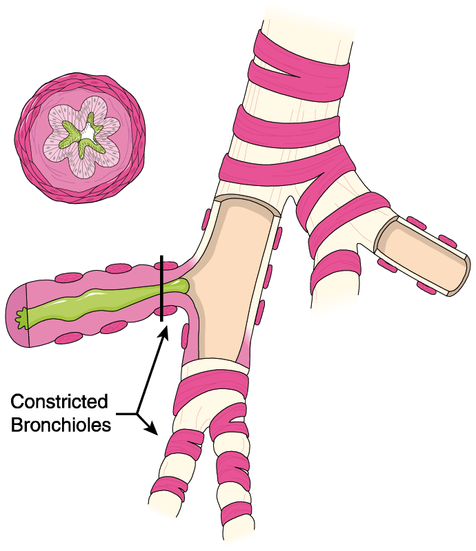
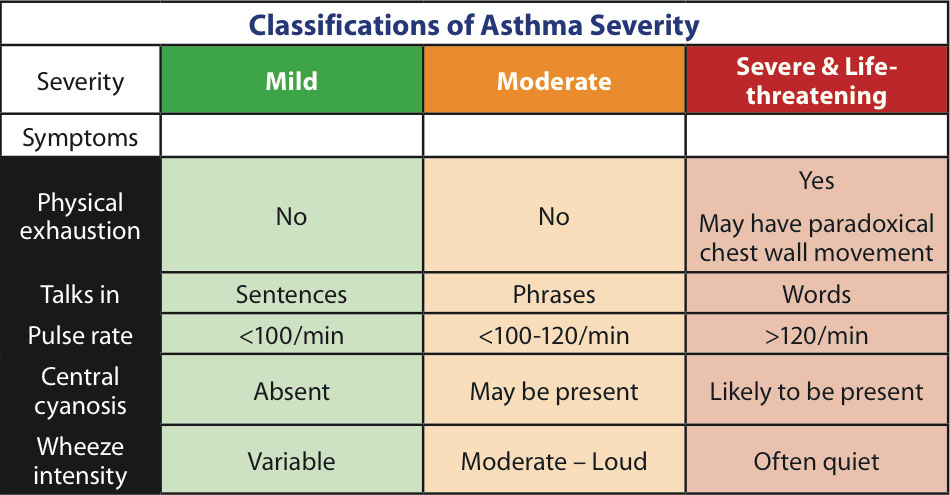
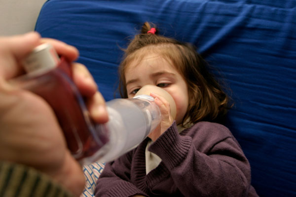
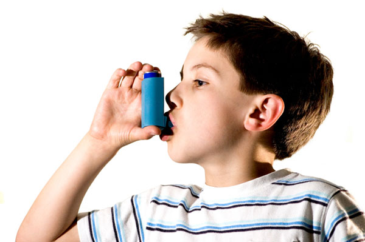

Asthma
Asthma
Australia has one of the highest rates of asthma in the world. Over 300 Australians die from asthma each year, and many of these deaths may be preventable.
Asthma sufferers have very sensitive airways, and when they are exposed to certain triggers, their airways narrow making it difficult for them to breathe.
An asthma attack can take anything from a few minutes to a few days to develop.
There are three main factors that cause airways to become narrow:
1. The inside lining of the airways becomes red and swollen (inflamed)
2. The muscle around the airways constrict (tighten)
3. Extra mucus may be produced
Trigger factors for asthma may include:
 Colds and flu
Colds and flu
 Exposure to known allergens, eg. dust mite, pollens, animal dander, moulds
Exposure to known allergens, eg. dust mite, pollens, animal dander, moulds
 Exposure to chemicals or other occupational sensitisers
Exposure to chemicals or other occupational sensitisers
 Exposure to irritants eg. cigarette smoke, perfume
Exposure to irritants eg. cigarette smoke, perfume
 Reflux
Reflux
 Drugs, eg. aspirin and beta-blockers
Drugs, eg. aspirin and beta-blockers
 Foods, eg. nuts, seafood
Foods, eg. nuts, seafood
 Food additives – colourings, monosodium glutamate (msg)
Food additives – colourings, monosodium glutamate (msg)
 Changes in weather, exposure to cool air
Changes in weather, exposure to cool air
 Exercise
Exercise
 Emotion
Emotion
Asthma is usually considered in three classifications of severity: mild, moderate and severe.

Signs and Symptoms
 pale, cool, clammy skin
pale, cool, clammy skin
 coughing, especially at night
coughing, especially at night
 shortness of breath – using all the chest and diaphragm muscles to breathe
shortness of breath – using all the chest and diaphragm muscles to breathe
 'sucking in' of the throat and rib muscles
'sucking in' of the throat and rib muscles
 severe chest tightness
severe chest tightness
 wheezing – a high pitched raspy sound
wheezing – a high pitched raspy sound
 cyanosis around the lips (bluish colour)
cyanosis around the lips (bluish colour)
 anxiety and distress
anxiety and distress
 exhaustion
exhaustion
 rapid, weak pulse
rapid, weak pulse
 little or no improvement after using reliever medication (Airomir, Asmol, Bricanyl, Epaq or Ventolin)
little or no improvement after using reliever medication (Airomir, Asmol, Bricanyl, Epaq or Ventolin)
 severe asthma attack:collapse – leading to eventual respiratory arrest
severe asthma attack:collapse – leading to eventual respiratory arrest

Care and Treatment
 sit the casualty comfortably upright
sit the casualty comfortably upright
 be calm and reassuring
be calm and reassuring

With spacer
 shake inhaler and insert mouthpiece into spacer
shake inhaler and insert mouthpiece into spacer
 place spacer mouthpiece in casualty's mouth and give 4 separate puffs of a blue/grey reliever puffer
place spacer mouthpiece in casualty's mouth and give 4 separate puffs of a blue/grey reliever puffer
 give 1 puff at a time
give 1 puff at a time
 ask the casualty to breathe in and out normally 4 times after each puff
ask the casualty to breathe in and out normally 4 times after each puff
 wait 4 minutes. If there is little or no improvement, repeat the above sequence
wait 4 minutes. If there is little or no improvement, repeat the above sequence
Without spacer
 shake inhaler
shake inhaler
 place mouthpiece in casualty's mouth. Fire 1 puff as the person inhales slowly and steadily
place mouthpiece in casualty's mouth. Fire 1 puff as the person inhales slowly and steadily
 ask the casualty to hold that breath for 4 seconds, then take 4 normal breaths
ask the casualty to hold that breath for 4 seconds, then take 4 normal breaths
 repeat until 4 puffs have been given
repeat until 4 puffs have been given
 wait 4 minutes. If there is little or no improvement, repeat the above sequence
wait 4 minutes. If there is little or no improvement, repeat the above sequence
 if still no improvement...
if still no improvement...
 call Triple Zero (000) for an ambulance
call Triple Zero (000) for an ambulance
 continuously repeat reliever medication every 4 minutes until the ambulance arrives
continuously repeat reliever medication every 4 minutes until the ambulance arrives
Collapsed Casualty:
 call Triple Zero (000) for an ambulance
call Triple Zero (000) for an ambulance
 if possible, assist with 4 puffs of a reliever
if possible, assist with 4 puffs of a reliever
 if little or no immediate improvement
if little or no immediate improvement
 repeat reliever medication every 4 minutes until the ambulance arrives
repeat reliever medication every 4 minutes until the ambulance arrives
 be calm and reassuring
be calm and reassuring
 if no signs of life – cardiopulmonary resuscitation (CPR)
if no signs of life – cardiopulmonary resuscitation (CPR)

No harm is likely to result from giving a reliever to someone who does not have asthma.

In a severe asthma attack, rescue breaths will require much greater force to inflate the lungs.
Useful Resources
The National Asthma Council Australia
 1800 032 495
1800 032 495
http://www.nationalasthma.org.au
Asthma Australia
 1800 645 130
1800 645 130
http://www.asthmaaustralia.org.au